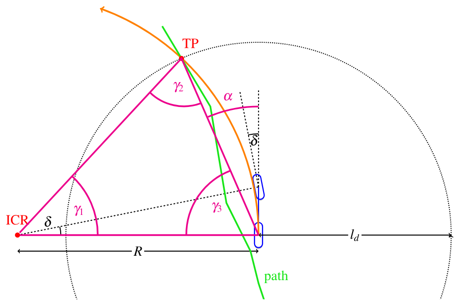
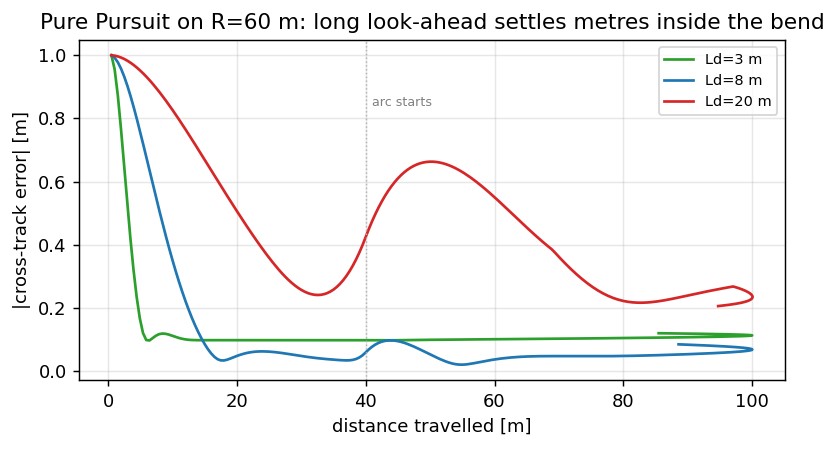

Pure Pursuit#
Геометрический поперечный контроллер: путь и скорость \(v\) → угол колеса \(\delta\). Режим
ppв нашем стеке. Геометрия следует AAD (CC BY 4.0).
Постановка задачи#
Нам нужно \(\delta(t)\), чтобы машина ехала по пути \(\{(x_i,y_i)\}\) в метрах — это и есть поперечное управление.
Идея Pure Pursuit:
Выбрать целевую точку на пути на дальности взгляда \(l_d\) от задней оси.
Выбрать \(\delta\) так, чтобы дуга кинематической велосипедной модели прошла через эту точку.
Примечание
Система device: \(y\) вправо-положительная. См. системы координат.
Дальность взгляда#
параметр конфига |
роль |
|---|---|
|
масштаб \(l_d(v)\) |
|
ограничители |
|
небольшая подстройка |
import numpy as np
def lookahead(v, K_dd=0.8, ld_min=8.0, ld_max=25.0):
"""Defaults match shipped config.json (C++ class defaults are smaller)."""
return float(np.clip(K_dd * v, ld_min, ld_max))
for v in (5, 15, 30):
print(f"v={v:2d} m/s → ld={lookahead(v):.1f} m")
# 5 → 8.0 (hit min), 15 → 12.0, 30 → 24.0
Малое \(l_d\): агрессивно, дёргано. Большое \(l_d\): плавно, срезает углы.
Поставляемый конфиг телефона: pp_k_dd=0.8, pp_ld_min=8, pp_ld_max=25.
Геометрия#

Рис. 12 Неверный \(\delta\): дуга велосипедной модели проходит мимо целевой точки.#
Пробуйте разные \(\delta\), пока дуга не попадёт в точку (интерактивные рисунки AAD):

Рис. 13 \(\delta = 25°\) — слишком круто.#

Рис. 14 \(\delta = 20°\).#

Рис. 15 \(\delta = 15°\).#

Рис. 16 \(\delta \approx 11.3°\) — дуга проходит через целевую точку.#
Полный вывод \(\delta\)#
{kind=link}

Рис. 17 Малиновый треугольник: МЦВ, задняя ось, целевая точка.#
Обозначения
\(l_d\) — расстояние от задней оси до целевой точки.
\(\alpha\) — угол между осью \(x\) кузова и лучом на целевую точку.
\(R\) — радиус поворота велосипедной модели (задняя ось вокруг МЦВ).
\(L\) — база.
Шаг 1. Целевая точка лежит на окружности радиуса \(R\) вокруг МЦВ, поэтому треугольник МЦВ–задняя ось–точка равнобедренный: обе стороны до МЦВ равны \(R\). Обозначим углы при основании \(\gamma_2=\gamma_3\).
Шаг 2. Из рисунка \(\gamma_3 + \alpha = 90°\), значит \(\gamma_2 = \gamma_3 = 90° - \alpha\).
Шаг 3. Сумма углов треугольника равна \(180°\):
Шаг 4. Теорема синусов:
Используя \(\sin(90°-\alpha)=\cos\alpha\) и \(\sin(2\alpha)=2\sin\alpha\cos\alpha\):
Шаг 5. Велосипедная модель (предыдущая глава): \(\delta = \arctan(L/R)\). Подставляем \(R\):

Рис. 18 Тот же закон на более простом наброске.#
Числовой пример#
Возьмём \(L=2.64\) м, \(l_d=8\) м, целевую точку в \((x,y)=(7.5,\ 2.8)\) м (система device, \(y\) вправо).
При steer_ratio=15.7 получаем \(|\mathrm{SWA}|\approx 13.4\times 15.7 \approx 210°\) до ограничителей — настоящие стеки насыщаются; формула даёт ненасыщенный геометрический запрос.
import math
def pure_pursuit_delta(x_tp, y_tp, ld, L=2.64):
alpha = math.atan2(y_tp, x_tp)
delta = math.atan(2.0 * L * math.sin(alpha) / ld)
return delta, alpha
delta, alpha = pure_pursuit_delta(7.5, 2.8, ld=8.0)
print(f"alpha={math.degrees(alpha):.1f} deg, delta={math.degrees(delta):.1f} deg")
# Sign check: TP on the other side → opposite delta
d_left, _ = pure_pursuit_delta(7.5, -2.8, ld=8.0)
print(f"delta for y=-2.8: {math.degrees(d_left):.1f} deg (sign flips)")
# Look-ahead vs speed (config-style)
import numpy as np
def lookahead(v, K_dd=0.8, ld_min=8.0, ld_max=25.0):
return float(np.clip(K_dd * v, ld_min, ld_max))
print("ld at 15 m/s:", lookahead(15))
Игрушечный замкнутый контур (прямой путь, старт со смещением)#
Путь — это ось \(x\). Машина начинает с \(y=1\) м при \(\theta=0\). Pure Pursuit должен вернуть её.
import math
import numpy as np
def step(x, y, th, v, delta, L=2.64, dt=0.05):
x += v * math.cos(th) * dt
y += v * math.sin(th) * dt
th += v * math.tan(delta) / L * dt
return x, y, th
def pp_toward_x_axis(x, y, th, v=12.0, L=2.64, K_dd=0.5):
"""TP = point ld ahead on the x-axis, in vehicle frame."""
ld = float(np.clip(K_dd * v, 3.0, 20.0))
# world TP
x_tp_w, y_tp_w = x + ld, 0.0
# into vehicle frame
dx, dy = x_tp_w - x, y_tp_w - y
x_v = math.cos(th) * dx + math.sin(th) * dy
y_v = -math.sin(th) * dx + math.cos(th) * dy
alpha = math.atan2(y_v, x_v)
return math.atan2(2 * L * math.sin(alpha), ld)
x, y, th = 0.0, 1.0, 0.0
for i in range(80): # 4 s
delta = pp_toward_x_axis(x, y, th)
x, y, th = step(x, y, th, v=12.0, delta=delta)
print(f"after 4 s: y={y:.3f} m (should be near 0), yaw={math.degrees(th):.1f} deg")
{kind=link}

Рис. 19 |CTE| вдоль дуги R=60 м для трёх взглядов: длинный гладок на прямой, но оседает метрами внутри поворота.#
Где одной точки перестаёт хватать#
Pure Pursuit сводит весь путь к одной точке. В этом его прелесть и его потолок, и потолок легко показать: у закона нет способа различить два пути, которые проходят через одну и ту же точку взгляда, а дальше делают совершенно разное.
import math
L_WB = 2.64
def pp_delta(tx, ty):
"""Pure Pursuit: wheel angle to reach the target point (tx, ty), y right-positive."""
ld_sq = tx * tx + ty * ty
if ld_sq < 1e-6:
return 0.0
return math.atan2(2.0 * L_WB * ty, ld_sq)
def path_point_at(kappa_near, kappa_far, ld, break_at=12.0):
"""A path that bends one way up to `break_at` and another way beyond it."""
if ld <= break_at:
return ld, 0.5 * kappa_near * ld * ld
y_break = 0.5 * kappa_near * break_at * break_at
slope = kappa_near * break_at
d = ld - break_at
return ld, y_break + slope * d + 0.5 * kappa_far * d * d
LD = 15.0
print(f"{'path':>28} {'point at 15 m':>15} {'delta':>8}")
for name, k_near, k_far in (("steady right bend", 0.006, 0.006),
("right, then straightens", 0.006, 0.0),
("right, then reverses", 0.006, -0.012)):
tx, ty = path_point_at(k_near, k_far, LD)
print(f"{name:>28} {f'({tx:.0f}, {ty:+.2f})':>15} {math.degrees(pp_delta(tx, ty)):>7.2f}°")
Запустите — три команды различаются, и это выглядит успокаивающе, пока не заметишь почему. Они различаются только потому, что дальняя кривизна случайно сдвинула точку на 15 м. Укоротите дальность взгляда — разница исчезнет; удлините — исчезнет вместо неё ближний изгиб. Закон читает один отсчёт функции, а положение отсчёта — настраиваемый параметр.
print(f"{'look-ahead':>12} " + " ".join(f"{n:>12}" for n in ("steady", "straightens", "reverses")))
for ld in (8.0, 12.0, 15.0, 20.0, 25.0):
row = []
for k_near, k_far in ((0.006, 0.006), (0.006, 0.0), (0.006, -0.012)):
tx, ty = path_point_at(k_near, k_far, ld)
row.append(math.degrees(pp_delta(tx, ty)))
spread = max(row) - min(row)
print(f"{ld:>10.0f} m " + " ".join(f"{v:>11.2f}°" for v in row) + f" spread {spread:>5.2f}°")
На 8 м три пути неразличимы: точка перелома лежит за целевой точкой, и контроллер не может знать, что она впереди. На 25 м разброс велик, но ближний изгиб перестал влиять, и машина его срежет. Такой дальности взгляда, которая читала бы оба, не существует, потому что читать нечего: число всего одно.
Это аргумент в пользу горизонта, и он отличается от аргумента про недокрут. Недокрут — это ошибка модели, её можно исправить лучшей моделью того же одношагового закона. А здесь предел информационный, он у самого закона. MPC отвечает на него, оптимизируя сразу по многим точкам; глава про модель машины отвечает сначала на другой, потому что горизонт, построенный на неверной кинематике, просто даёт уверенный неверный план.
Почему Pure Pursuit всё ещё в дереве
У него нет весов стоимости, нет горизонта и есть один параметр с физическим смыслом — это единственный
контроллер здесь, поведение которого можно предсказать руками. Когда заезд выглядит неправильно, переключение
на pp говорит, в контроллере проблема или выше него. В офлайн-реплее он даже держит полосу лучше, чем fp,
при любом испробованном уровне деградации — а на дороге наоборот, и это находка про реплей, а не про
контроллеры.
Измерьте компромисс сами#
Игрушечный контур выше пользовался осью x. Отсюда дорога — полилиния, той же формы, что
vision/path на телефоне, и регулятору можно только искать по точкам, ровно как настоящему:
import math
import numpy as np
DT, L, V = 0.05, 2.636, 10.0
MAX_STEER = math.radians(25.0)
def sine_path(a=1.75, lam=120.0, length=400.0):
x = np.arange(0.0, length, 0.5)
return np.stack([x, a * np.sin(2 * np.pi * x / lam)], axis=1)
def arc_path(radius=60.0, length=180.0):
"""Straight 40 m, then a constant left arc — the corner-cut detector."""
s = np.arange(0.0, length, 0.5)
pts = []
for si in s:
if si < 40.0:
pts.append((si, 0.0))
else:
t = (si - 40.0) / radius
pts.append((40.0 + radius * math.sin(t), radius * (1 - math.cos(t))))
return np.array(pts)
def pure_pursuit(path, x, y, psi, ld, near_idx):
"""Return (delta, updated near_idx). Walks forward only, like the real tracker."""
d = np.hypot(path[near_idx:, 0] - x, path[near_idx:, 1] - y)
near_idx += int(np.argmin(d[: max(1, int(4 * ld))]))
target = None
for i in range(near_idx, len(path)):
if math.hypot(path[i, 0] - x, path[i, 1] - y) >= ld:
target = path[i]
break
if target is None:
return 0.0, near_idx
alpha = math.atan2(target[1] - y, target[0] - x) - psi
delta = math.atan2(2.0 * L * math.sin(alpha), ld)
return float(np.clip(delta, -MAX_STEER, MAX_STEER)), near_idx
def drive(path, ld, t_end=45.0):
"""Return |CTE| samples and mean per-tick steering change [deg]."""
x, y, psi = path[0, 0], path[0, 1] + 1.0, 0.0
near, prev_delta = 0, 0.0
ctes, dsteps = [], []
for _ in range(int(t_end / DT)):
delta, near = pure_pursuit(path, x, y, psi, ld, near)
x += V * math.cos(psi) * DT
y += V * math.sin(psi) * DT
psi += V * math.tan(delta) / L * DT
d = np.hypot(path[:, 0] - x, path[:, 1] - y)
ctes.append(float(d.min()))
dsteps.append(abs(math.degrees(delta - prev_delta)))
prev_delta = delta
if near >= len(path) - 3:
break
return np.array(ctes), float(np.mean(dsteps))
Теперь переберите единственный параметр этого регулятора:
sine, arc = sine_path(), arc_path()
print(f"{'Ld':>4} | sine |CTE| p95 | arc settled | steer jitter °/tick")
results = {}
for ld in (3.0, 8.0, 20.0):
c_sine, jit = drive(sine, ld)
c_arc, _ = drive(arc, ld)
sine_p95 = np.percentile(c_sine[len(c_sine) // 3:], 95)
arc_settled = np.percentile(c_arc[3 * len(c_arc) // 4:], 95)
results[ld] = (sine_p95, arc_settled, jit)
print(f"{ld:4.0f} | {sine_p95:13.3f} | {arc_settled:11.3f} | {jit:.3f}")
Читайте три колонки друг против друга. Незатухающее виляние прошлой главы ушло на любом взгляде — но появились два новых факта. Короткий взгляд пилит руль (в пять раз больший шаг руля за тик, чем у длинного). Длинный не просто сглаживает команду — он оседает метрами внутри поворота: гнаться за точкой в 20 м впереди на дуге радиусом 60 м значит рулить по хорде, а хорда проходит изнутри. И даже на дружелюбном \(L_d\) синусоида несёт постоянное хордовое отставание ~0.24 м — Pure Pursuit никогда не едет ровно ту кривую, которую ему дали.
assert all(r[0] < 0.40 for r in results.values()), \
"acceptance: bounded error at every Ld, no per-road gains — the oscillation is gone"
assert results[20.0][1] > 10.0 * results[3.0][1], \
"acceptance: the long look-ahead must settle an order of magnitude deeper inside the arc"
assert results[3.0][2] > 4.0 * results[20.0][2], "acceptance: short Ld must be the jitteriest"
print(f"acceptance passed: arc offset {results[3.0][1]:.2f} → {results[20.0][1]:.2f} m "
f"as Ld goes 3 → 20; jitter moves the other way")
Одна точка не может представить путь, чья кривизна меняется внутри взгляда, — числа выше и есть эта фраза, измеренная. Масштабирование \(L_d\) по скорости двигает компромисс; убрать его оно не может. Читать весь путь вместо одной точки — это то, что делает MPC.
Интеграция#
vision/lanes + vehicle/state → PurePursuit → δ → SWA → LatControlPID → Panda → HCA_01
"lane_keep_controller": "pp". На дороге по умолчанию обычно fp.
Частые ошибки#
Неверный знак \(y\) (device против ISO).
Забыли
steer_sign = -1.Настройка на окнах с тепловым троттлингом и темпом 3 Гц.
Нет модели недокрута при \(v\sim 20\) м/с.
Отношение к дальности взгляда как к ручке качества. Это выбор того, какую часть пути игнорировать — см. выше. Если её настройка ощущается как компромисс между срезанием углов и запоздалой реакцией, то это он и есть, и никакое значение его не снимает.
Задания#
Меняйте
K_ddв игрушечном контуре: как меняется установление \(y\)?Поставьте целевую точку в \((8, 0)\) против \((8, 3)\): напечатайте \(\delta\).
Перебор по бегу:
bag/bag_config_sweep.py, парето |CTE| против |\(\Delta\)SWA|.В прогоне по дальности взгляда выше найдите дальность, минимизирующую разброс между тремя путями. Затем объясните, почему эта дальность — худший выбор, а не лучший.
Добавьте поправку на недокрут из главы про модель машины в
pp_deltaи повторите прогон при 22 м/с. Меняет ли это информационный предел или только величины?
Каждый контроллер до сих пор полагал путь заданным. Но две линии разметки шумны, а план модели режет дуги — так откуда берётся единственная полилиния, которую они отслеживают? Это следующая глава, и именно там решается половина измеренного смещения на дуге.
Дальше: Путь разметки